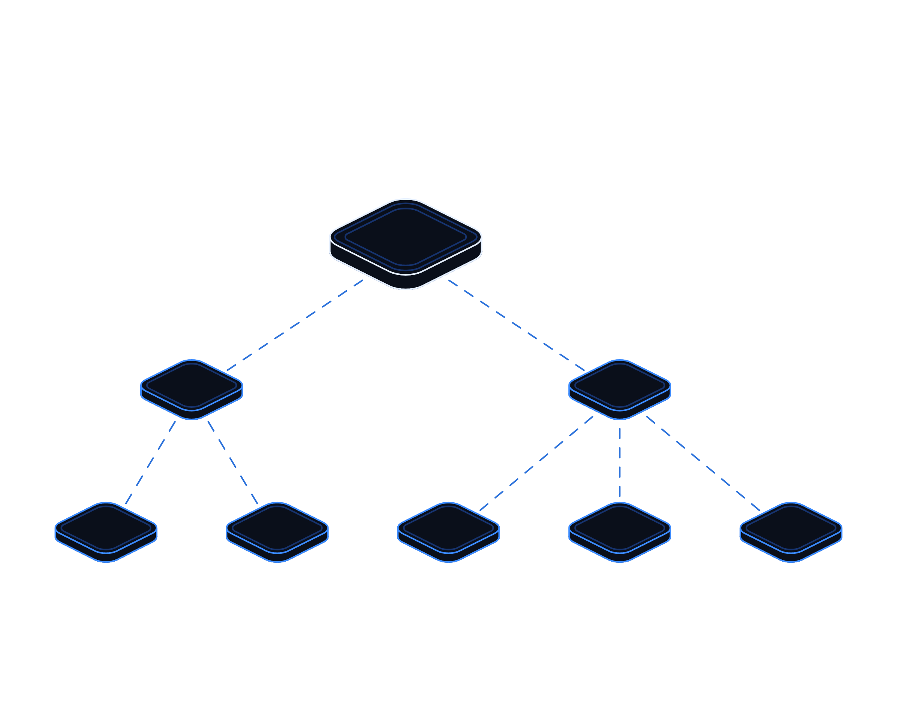

Trust Your Tools


Hot topics · Playbook
No. 02 · November 2026
Hot topics · AI tooling security
Trust your
tools.
October 2026 showed that the gateways, extensions and packages behind AI work are now a front door for attackers. Here is how to keep them honest.
Transputec playbooktransputec.com
Inside
Contents
A practical plan for keeping the AI tools your developers and data teams install trustworthy: what to inventory, what to lock down, and what to do on the day one of them turns against you.
Foreword03
Introduction04
01Know what you run06
02Control what gets in10
03Respond and recover16
 Contents
ContentsTrust Your Tools · Hot Topics · Playbook02 / 24
Foreword
The tools that build your AI are now part of your attack surface.
In the space of three weeks in October 2026, attackers published a poisoned release of LiteLLM, a widely used open-source gateway that sits between applications and many AI model providers, and a tampered copy of the Claude Code extension that was served through Cursor's extension marketplace. Earlier in the month a TypeScript SDK called Tensorlake was hijacked on npm with a worm that hunted for AI tool and MCP configuration files.
None of these started with a clever exploit in your own code. Each one arrived through something a developer, a data scientist or an automated build trusted: a package update, an extension update, a container tag called latest. And each was built to take what AI work tends to concentrate in one place: cloud credentials, model provider API keys and broad access to source code.
The vendors involved moved quickly, published detailed advisories and rebuilt what was affected. That is the good news. The harder lesson is that most organisations could not have answered, on the day, a simple question: are we running it? This playbook is about making sure you can, and about limiting the damage when the answer is yes.
The Transputec team
Transputec
Foreword Trust Your Tools · Hot Topics · Playbook03 / 24
Introduction
Trust is not a setting. It is a habit.
AI teams install more third-party code, more quickly, than almost anyone else in the business. Gateways, SDKs, coding assistants, extensions and MCP servers arrive weekly, often with access to keys that can spend money and reach production. Keeping them trustworthy takes three habits.
Know what you run
An inventory of AI tools, extensions, packages and MCP servers, with an owner and a list of what each one can reach.
Control what gets in
Pinned versions, a short delay before new releases, approved sources and allow-lists for extensions and MCP servers.
Be ready to respond
A rehearsed plan to find affected machines, clean them properly and rotate every key they could reach, from a clean device.
Introduction Trust Your Tools · Hot Topics · Playbook04 / 24
Every tool your developers install runs with their keys.
Treat AI gateways, coding assistants, extensions and MCP servers as privileged software, because that is what they are.
Introduction Trust Your Tools · Hot Topics · Playbook05 / 24
01
Part 01
Know what
you run.
You cannot protect, patch or rotate what you have not written down.
01Why AI tooling is a prime target
02Where poisoned tools get in
03Building the inventory
Part 01 Trust Your Tools · Hot Topics · Playbook06 / 24
Why it matters
Why attackers have moved up the AI stack
One poisoned tool on an AI engineer's laptop can reach every key that engineer can.
Attackers follow value. A modern AI team's laptop or build server tends to hold the keys to several model providers, a cloud account, a source code host and a container registry, often all in plain environment variables or configuration files. One compromised tool on that machine can collect the lot.
AI gateways concentrate this further. A gateway such as LiteLLM exists to hold provider keys centrally and hand out its own virtual keys to applications. LiteLLM's own advice after the October release told affected users to rotate every provider key stored in the proxy database, along with master and virtual keys, the database password and the host's cloud role.
Coding assistants and their extensions are a second prize. They run inside the editor with the developer's permissions, can read the code base and often run commands. The tampered Claude Code extension in October did not need a vulnerability. It simply ran when the editor loaded it, as extensions do.
Third, AI tooling moves fast. Teams update gateways and SDKs frequently to get new models and features, and many installs are unpinned, so a malicious release published at breakfast can be inside a build pipeline by lunch. The October LiteLLM release was live on PyPI for under two hours, according to LiteLLM, and that was long enough to matter.
Fourth, the malware now knows about AI tools. Researchers analysing the October incidents describe payloads that look specifically for Claude, Cursor, Codex and Gemini configuration, MCP settings and model provider keys, and one that wrote AI assistant settings files into repositories so it would run again when a project was opened.
None of this means AI tools are unsafe to use. It means they deserve the same discipline you already apply to privileged software such as remote access tools and admin consoles, and that discipline starts with knowing exactly what you have.
Why it matters Trust Your Tools · Hot Topics · Playbook07 / 24
How it happens
Four ways a trusted tool turns hostile
The October incidents used different routes, but all of them abused trust in a normal release channel.

01
A hijacked release pipeline
Stolen developer tokens let an attacker point a real project's release workflow at a lookalike repository, so the official package name carried malicious code.
02
A tampered marketplace listing
A modified extension appeared under a trusted publisher's name in one marketplace, so checking the publisher alone would not have caught it.
03
A self-spreading package worm
A compromised maintainer account published a package that stole tokens and used them to republish itself into other projects.
04
Leaked secrets as the first step
In LiteLLM's account, the chain began with an admin key left in public commit history for months and never revoked.
Know what you run Trust Your Tools · Hot Topics · Playbook08 / 24
The inventory
What to record for every AI tool
Start with a spreadsheet. The point is coverage and ownership, not a perfect system.
Tool type
Examples to find
What it can reach
Record
AI gateways and proxies
LiteLLM and similar model routers, self-hosted or in containers.
Every provider key it holds, its database, the host's cloud role.
Version, image digest, owner, keys held.
SDKs and packages
Model provider SDKs, agent frameworks, vector database clients.
Whatever the build or runtime environment can reach.
Pinned version, lockfile, where it runs.
Coding assistants
CLI and desktop coding agents, AI code editors.
Source code, shell, developer tokens and sessions.
Approved product, version, who uses it.
Editor extensions
Assistant extensions, linters, themes, language tools.
Everything the editor user can reach.
Extension ID, publisher, marketplace, version.
MCP servers
Local and remote servers that connect assistants to tools and data.
The systems and data each server is wired into.
Source, version, scopes, who approved it.
API keys and tokens
Model provider keys, gateway master keys, CI tokens.
Spend, data and in some cases production systems.
Owner, scope, where stored, expiry.
Know what you run Trust Your Tools · Hot Topics · Playbook09 / 24
02
Part 02
Control what
gets in.
Make the safe route the default route for every package, extension and MCP server.
01Five rules for trustworthy releases
02From registry to laptop
03Secrets, extensions and MCP
Part 02 Trust Your Tools · Hot Topics · Playbook10 / 24
Principles
Five rules for installing AI tooling
Simple rules, enforced by tooling rather than goodwill, close most of the gaps October exposed.
01
Pin every version and commit the lockfile
No unpinned installs in builds, containers or notebooks. Pin container images by digest, not by tags such as latest or main-stable.
02
Wait before you take a new release
A short cooling-off period, a day or more for most tools, lets the community and the vendor spot a bad release first.
03
Install from sources you control
Route packages and images through a private registry or mirror that you can block, audit and roll back.
04
Allow-list extensions and MCP servers
Only approved extension IDs, publishers and MCP servers, managed centrally rather than in each developer's settings.
05
Verify, then keep verifying
Check signatures and provenance where they exist, but remember both passed in October. Watch behaviour as well as badges.
Control what gets in Trust Your Tools · Hot Topics · Playbook11 / 24
The safe path
From public registry to developer laptop
One controlled route for every AI package and tool, with a check at each step.
Request
A developer asks for a new tool, extension or MCP server through a short form that records purpose, owner and what it needs to reach.
Review
Security checks the source, publisher, maintainer activity, permissions requested and any known advisories.
Mirror
Approved versions are pulled into your private registry after a cooling-off period, with hashes, image digests and an SBOM recorded.
Enforce
Build systems and editors install only from the mirror and the allow-list. Direct installs from public sources are blocked.
Watch
Endpoint and network monitoring look for unusual behaviour from editors, interpreters and build runners.
Signatures and provenance tell you who published a release, not whether the publisher's pipeline or account was hijacked.
Control what gets in Trust Your Tools · Hot Topics · Playbook12 / 24
Prioritise
Where to tighten controls first
Plot each AI tool by how much it can reach and how often it changes. Start top right.
Lock down
High privilege, stable
Gateways and MCP servers wired into core systems. Pin, mirror and review every change.
Start here
High privilege, fast moving
Coding assistants, extensions and AI SDKs updated weekly on machines with powerful keys.
Contain
Lower privilege, stable
Isolated tools with narrow scopes. Keep them pinned and review yearly.
Sandbox
Lower privilege, fast moving
Experiments and prototypes. Allow them, but only in sandboxes with throwaway keys.
Update frequency →
↑ Privilege
Control what gets in Trust Your Tools · Hot Topics · Playbook13 / 24
Secrets hygiene for AI keys
Every incident in October was after credentials. Make the keys worth less to steal and quicker to replace.
Scope and separate
Give each application its own provider key with the narrowest scope and spend limit. Never share one master key across teams.
Keep keys out of files
Use a secrets manager or the cloud's workload identity. Remove keys from .env files, notebooks, shell history and assistant configs.
Expire by default
Prefer short-lived and fine-grained tokens for source control and CI. Long-lived personal tokens are the attacker's favourite.
Scan and alert
Turn on secret scanning and push protection for every repository, and treat every finding as revoke now, investigate later.
Owner
Head of platform engineering, with security
Bring this to the monthly review, with a date for each action.
Control what gets in Trust Your Tools · Hot Topics · Playbook14 / 24
Editors and agents
Controls for extensions and MCP servers
Assistant extensions and MCP servers run with the user's permissions. Manage them like software, not settings.
Central allow-list
Restrict installs to approved extension IDs or publishers through the editor's admin console or device management, not a local file users can edit.
Install cooldown
Where the editor supports it, hold new extension versions for a set number of hours. Cursor documents this control for its users.
Approved MCP catalogue
Publish a short list of vetted MCP servers with pinned versions and the scopes each may use. Block the rest.
Least privilege for agents
Avoid permission-bypass modes on machines with real credentials. Keep agents in containers or virtual machines for risky work.
Ask of every extension and MCP server: if this turned hostile tomorrow, what could it reach?
Control what gets in Trust Your Tools · Hot Topics · Playbook15 / 24
03
Part 03
Respond and
recover.
When a tool you trust is compromised, speed and thoroughness matter more than blame.
01Three scenarios
02The first 24 hours
03Your 90-day plan
Part 03 Trust Your Tools · Hot Topics · Playbook16 / 24
Scenarios
Three days you should rehearse
Platform team
A poisoned AI gateway release
The trigger
A vendor advisory says one release of your AI gateway carried a credential stealer.
First move
Find every host and image that ran it, using lockfiles, image digests and build logs.
Do not
Start by running pip or the app in the affected environment. Some payloads re-run on start.
Then
Rebuild from clean images and rotate every key the gateway and host could reach.
Developer desktop
A tampered editor extension
The trigger
A marketplace notice says an assistant extension version planted a backdoor.
First move
Use device management to find which machines installed that version in the window.
Do not
Assume uninstalling is enough. Check for added SSH keys, startup items and scheduled tasks.
Then
Isolate, clean or rebuild, and rotate the user's tokens and sessions from a clean device.
Security team
A leaked AI or CI token
The trigger
Secret scanning finds a provider key or admin token in a public commit.
First move
Revoke it immediately. Deleting the commit does not remove it from history.
Do not
Wait for proof of misuse before rotating. Attackers can sit on keys for months.
Then
Review provider and cloud logs for use of the key and tighten scanning.
Respond and recover Trust Your Tools · Hot Topics · Playbook17 / 24
The first 24 hours
When a tool you use is compromised
A sequence that holds for packages, images, extensions and MCP servers alike.
01
Confirm exposure fast
Match the vendor's affected versions, hashes and time window against your inventory, lockfiles, registries and device records.
02
Preserve, then contain
Keep copies of the package and artefacts for investigation, then isolate affected machines and block known attacker domains and addresses.
03
Remove persistence properly
Follow the vendor's clean-up steps in full. Some payloads survive uninstalling, and one Tensorlake payload threatened destruction if tokens were revoked first.
04
Rotate from a clean device
Rotate cloud roles, model provider keys, gateway keys, source control tokens and sessions the host could reach, in the order the advisory gives.
05
Audit and report
Check cloud and provider logs for use of exposed keys, record decisions, and assess whether personal data was involved for UK GDPR reporting.
Remember
Read the whole advisory before you act. The order of clean-up steps can matter as much as the steps themselves.
Respond and recover Trust Your Tools · Hot Topics · Playbook18 / 24
Your plan
This week, this month, this quarter
A realistic sequence for a mid-sized organisation with one or two AI or data teams.
This week
Check for LiteLLM 1.107.0, Tensorlake 0.5.144 and the affected Claude Code extension versions.
Security lead
Written confirmation per team.
This week
List every AI gateway, coding assistant, extension and MCP server in use.
Engineering managers
Inventory with an owner per item.
This month
Pin versions, pin images by digest and add a cooling-off period for new releases.
Platform team
No unpinned installs in builds.
This month
Move provider keys into a secrets manager with per-app scope and spend limits.
Platform team
No keys in .env or configs.
This quarter
Private registry or mirror, central extension allow-list, approved MCP catalogue.
Head of engineering
Direct public installs blocked.
This quarter
Rehearse the response plan with a tabletop exercise.
CISO or IT director
Exercise run, gaps logged.
Respond and recover Trust Your Tools · Hot Topics · Playbook19 / 24
Pitfalls
Five ways good intentions fall short
Each of these showed up in October's incidents or the advice that followed.
01
Trusting the badge
Signed releases and provenance attestations passed because attackers used the project's own pipeline and keys. They prove origin, not intent.
02
Uninstall and move on
Backdoors and startup hooks can live outside the package or extension folder. Follow the full clean-up.
03
Rotating from the infected machine
New keys typed on a compromised device can be stolen again. Rotate from a clean one.
04
Forgetting the build servers
CI runners and Kubernetes nodes installed the poisoned gateway too. Include them in every search.
05
Leaving old secrets alive
Deleting a file from a repository does not delete it from history. Revoke, then clean up.
Respond and recover Trust Your Tools · Hot Topics · Playbook20 / 24
Ask now
Questions for leaders and suppliers
Use these with your engineering leads and with any vendor whose AI tooling you rely on.
For your team
?Could we say within an hour whether we ran a named package version or extension?
?Which machines hold model provider keys, and could one tool reach all of them?
?Who can approve a new MCP server or extension, and where is that list?
For your suppliers
?How are your release pipelines protected, and who can publish under your name?
?How quickly will you tell us if a release or listing is compromised, and how?
?Do you sign releases, publish hashes, and keep a clean last-known-good version?
Respond and recover Trust Your Tools · Hot Topics · Playbook21 / 24
Checklist
Can you trust your tools?
Tick what is in place today. Anything left blank is your next step.
An inventory of AI tools, extensions, packages and MCP servers
With an owner and what each can reach.
Versions pinned, images pinned by digest, a cooling-off period
Including notebooks, containers, CI and extensions.
A private registry or mirror for AI packages
With the ability to block a version quickly.
Central allow-lists for extensions and MCP servers
Enforced by the admin console or device management.
Provider keys in a secrets manager
Scoped per application with spend limits.
Secret scanning and push protection on every repository
With revocation as the first response.
Developer guidance published
One page on approved tools, keys and what to report.
A rehearsed response plan
Including rotation from a clean device.
Respond and recover Trust Your Tools · Hot Topics · Playbook22 / 24
Glossary
Words worth knowing
AI gateway
Software that sits between applications and model providers, holding their keys and routing requests.
Supply chain attack
Compromising software you trust, such as a package or extension, to reach the people who use it.
Lockfile
A file that records the exact versions of every dependency so builds are repeatable.
Image digest
A unique fingerprint for a container image. Unlike a tag, it cannot be moved to point elsewhere.
Private registry
An internal copy of approved packages and images that builds install from.
Provenance
Signed evidence of where and how a release was built.
MCP server
A connector using the Model Context Protocol that lets an AI assistant use tools and data.
Extension marketplace
A store from which code editors install add-ons, such as Open VSX or Cursor's marketplace.
SBOM
A software bill of materials: a list of the components inside a piece of software.
Persistence
Anything malware leaves behind so it keeps running after a restart or uninstall.
LLMjacking
Using stolen credentials to run AI models at the victim's expense.
Secret scanning
Automated checks that find keys and tokens in code and block them from being pushed.
Glossary Trust Your Tools · Hot Topics · Playbook23 / 24
Ready to trust
your tools again?
We help organisations inventory their AI tooling, lock down how it is installed and respond quickly when a supplier is compromised.
Book an AI tooling security reviewtransputec.com
Read the companion report
Intelligence report No. 02 · Poisoned tools
Transputec · Hot Topics · No. 02